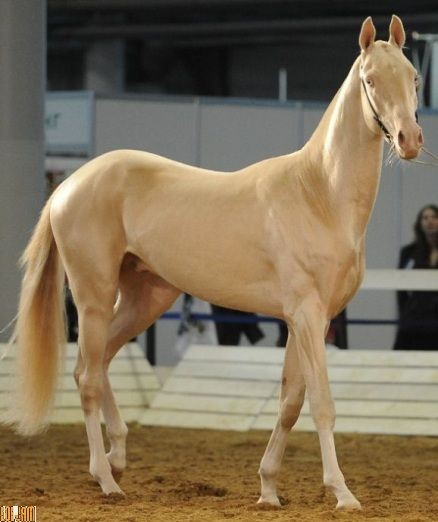
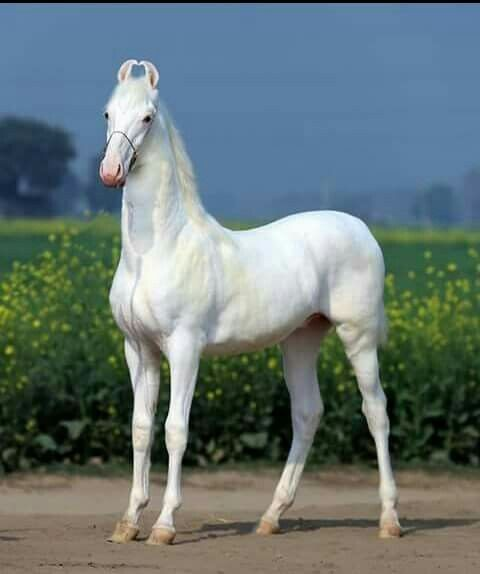

Sobre Cavalos
Os cavalos são mamíferos herbívoros domesticados há milhares de anos. São conhecidos por sua força, velocidade e parceria com os seres humanos nas mais diversas atividades, como transporte, esporte e lazer.
Existem mais de 300 raças de cavalos no mundo, variando em tamanho, cor, temperamento e utilidade. Algumas raças são extremamente raras e valorizadas.
Raça Rara: Akhal-Teke
O Akhal-Teke é uma raça originária do Turquemenistão, famosa por sua pelagem brilhante que parece metálica. É uma das raças mais antigas e resistentes do mundo. Seu visual elegante e único chama atenção em todo o mundo. Akhal-Teké é uma das raças atuais de cavalo (nome científico Equus ferus caballus), que recebe esse nome em particular em razão dos ancestrais da raça serem oriundos de uma das ramificações das tribos Teke. Esses cavalos estão listados com uma das raças mais bonitas e também mais caras do mundo, ao lado de raças como o cavalo árabe, cavalo crioulo, Quarto de Milha, Mangalarga Marchador, Apallosa, Tinker, entre outras. É importante considerar que mesmo que 80 % dos cavalos no Brasil sejam destinados ao trabalho, os 20 % (considerados de raça mais nobre) destinados ao esporte e lazer possuem o maior impacto sobre o mercado. Muitas raças são inclusive leiloadas pela internet e pela televisão. Acredita-se que esse comércio movimente atualmente no Brasil cerca de R$ 12 bilhões por ano.
Raça Rara: Marwari
Originário da Índia, o Marwari se destaca pelas suas orelhas curvas voltadas para dentro. É uma raça rara e valorizada por sua coragem, resistência e aparência exótica, além de ter importância histórica na cavalaria indiana. Animais de orelhas perfeitamente curvas eram considerados sagrados pelo clã Rajput Conhecer e amar a raça indiana Marwari é, para muitos, reingressar no reino mágico da infância, um mundo de castelos e heróis, intrigas e paixão, ações obscuras e cavalos míticos. Uma época em que rainhas cavalgavam como guerreiras, uma época em que os homens lutavam para viver e viviam para lutar nos campos de batalha e nunca entravam gentilmente naquela boa noite. Montar um Marwari é ver o caminho através de um par de orelhas perfeitamente curv